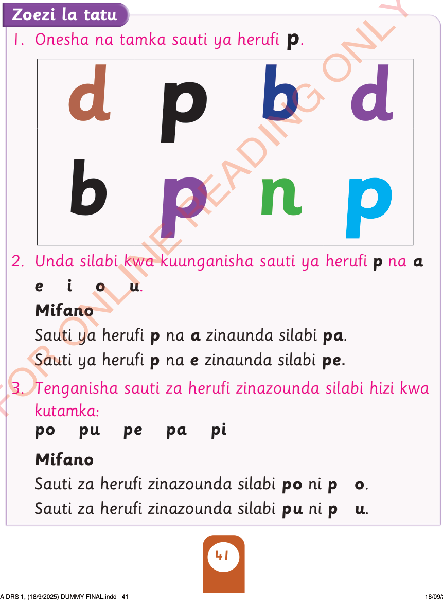

Tazama/ chunguza herufi hii:
Tamka sauti ya herufi hii/ bainisha kwa tahajia za vidole herufi hii:
p
Zoezi la tatu
1. Onesha na tamka sauti ya herufi p/ onesha na bainisha kwa kutumia tahajia za vidole herufi p.

dpbd
bpnp
2. Unda silabi kwa kuunganisha herufi p na a
e i o u.
Mifano
Herufi p na a zinaunda silabi pa.
Herufi p na e zinaunda silabi pe.
3. Tenganisha herufi zinazounda silabi hizi kwa kutamka/ kwa kutumia tahajia za vidole:
po pu pe pa pi
Mifano
Herufi zinazounda silabi po ni p o.
Herufi zinazounda silabi pu ni p u.